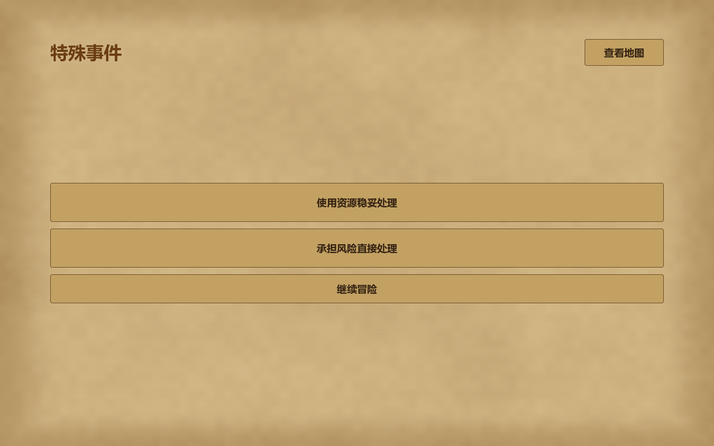
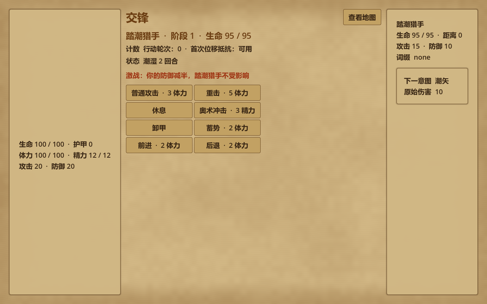
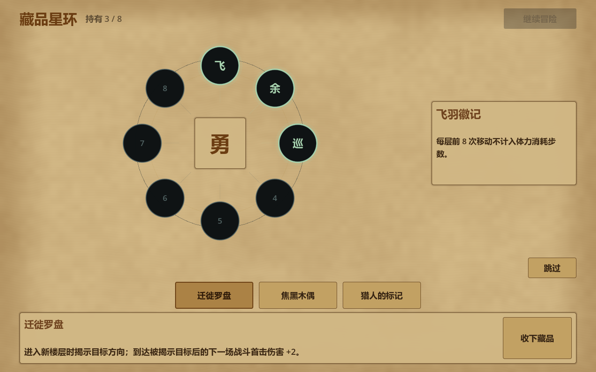

核心循环
玩家从营地进入分层地图，在可见范围内选择路线并消耗行动资源。地块会触发战斗、资源、商店或特殊事件，探索结果持续反馈到生命、威胁、背包、成长和收藏进度中。
Godot · Exploration · Event-driven Adventure
从 C++ 控制台原型、Qt Widgets 桌面界面持续演进到 Godot 版本，以地图探索和战争迷雾为主轴，串联事件抉择、战斗、商店、营地、成长与收藏系统。

玩家从营地进入分层地图，在可见范围内选择路线并消耗行动资源。地块会触发战斗、资源、商店或特殊事件，探索结果持续反馈到生命、威胁、背包、成长和收藏进度中。
项目保留了原始 C++ 玩法逻辑，并完成 Qt Widgets 桌面界面迁移与 Godot/GDScript 版本重构。各阶段持续校验商店、地图可见性、目标阻挡、事件和状态流转等行为，使界面升级不改变核心规则。


